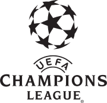

| Bajnokok ligája győztesek |
| Év |
Helyszín |
Győztes csapat |
Ellenfél |
Végeredmény |
| 2002 |
Glasgow |
Real Madrid |
Bayer Leverkusen |
2–1 |
| 2003 |
Manchester |
AC Milan
| Juventus FC
| 0–0,
t. 3–2 |
| 2004 |
Gelsenkirchen |
FC Porto |
AS Monaco |
3–0 |
| 2005 |
Isztambul |
Liverpool |
AC Milan |
3–3, t. 3–2 |
| 2006 |
Párizs |
FC Barcelona |
Arsenal |
2–1 |
| 2007 |
Athén |
AC Milan |
Liverpool FC |
2–1 |
| 2008 |
Moszkva |
Manchester United |
Chelsea |
1–1, t. 6–5 |
| 2009 |
Róma |
Barcelona |
Manchester United |
2–0 |
| 2010 |
Madrid |
Internazionale |
Bayern München |
2–0 |
| 2011 |
London |
Barcelona |
Manchester United |
3–1 |
| 2012 |
München |
Chelsea |
Bayern München |
1–1, t. 4–3 |
| 2013 |
London |
Bayern München |
Borussia Dortmund |
2–1 |
| 2014 |
Lisszabon |
Real Madrid |
Atlético Madrid |
4–1 |
| 2015 |
Berlin |
Barcelona |
Juventus |
3–1 |
| 2016 |
Milánó |
Real Madrid |
Atlético Madrid |
1–1, t. 5–3 |
| 2017 |
Cardiff |
Real Madrid |
Juventus |
4–1 |
| 2018 |
Kijev |
Real Madrid |
Liverpool |
3–1 |
| 2019 |
Madrid |
Liverpool |
Tottenham |
2–0 |
| 2020 |
Lisszabon
|
Bayern München |
Paris Saint-Germain |
1–0 |
| 2021 |
Porto |
Chelsea |
Manchester City |
1–0 |
| BL győzelmi toplista |
| Toplistás helyezett |
Csapat neve |
BL győzelmek száma |
| 1. |
Real Madrid |
14 |
| 2. |
AC Milan |
7 |
| 3. |
Bayern München |
6 |
| 4. |
Liverpool FC |
6 |
| 5. |
FC Barcelona |
5 |